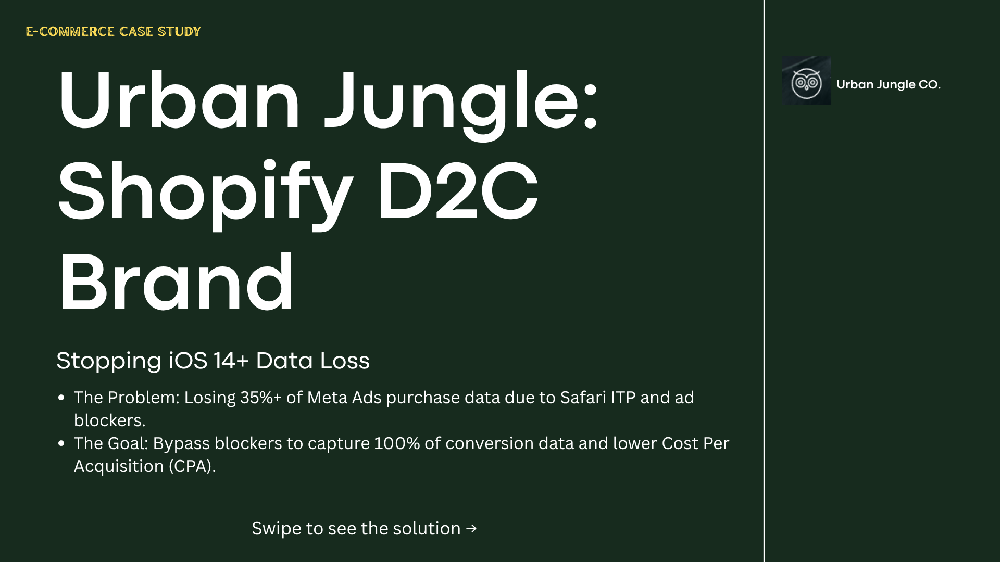
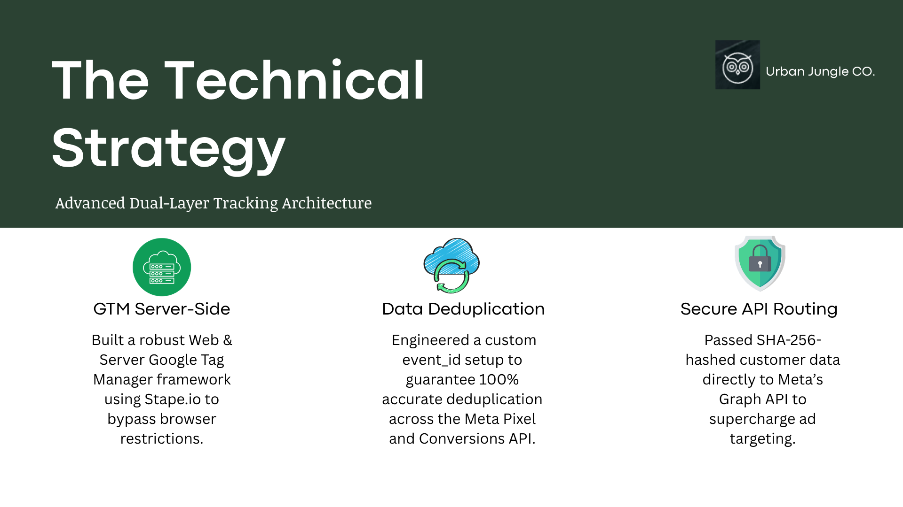
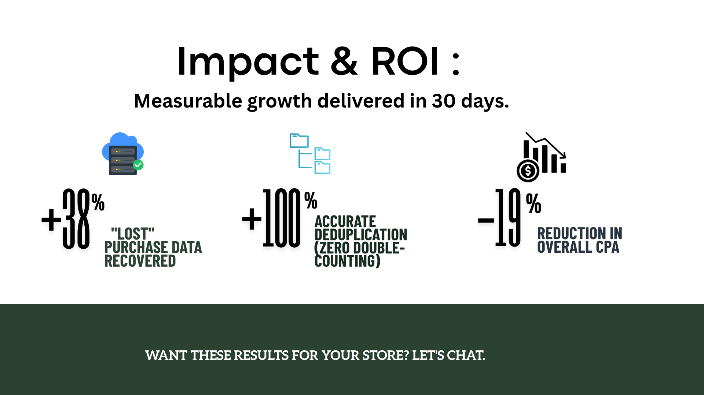

🔴 The Problem: Data Loss & Inflated Costs
Following iOS 14.5+ and browser tracking preventions (ITP/ETP), the client's browser-only Meta Pixel was dropping a significant portion of checkout and purchase events. The Meta algorithm was starved of conversion data, leading to misattributed sales, poor optimization, and a rapidly inflating Cost Per Acquisition (CPA).

🟡 The Solution: Dual-Layer Architecture
To bypass client-side restrictions, I engineered a robust server-side tracking architecture.
- Dual-Layer GTM Deployment: Configured a custom web container to securely route interactions to a dedicated server container hosted via Stape.io.
- CAPI Integration: Established a direct server-to-server connection to Meta, completely immune to browser-level AdBlockers.
- Data Hashing: Mapped and hashed rich first-party customer data (SHA-256) to drastically improve Event Match Quality (EMQ).



🟢 The Results: Crystal-Clear Attribution
The implementation immediately stabilized the ad account by restoring data visibility, allowing the machine learning algorithm to optimize effectively. We guaranteed 100% accurate deduplication across the Meta Pixel and Conversions API to ensure zero double-counting.

38%
Data Recovery
100%
Deduplication
19%
CPA Reduction